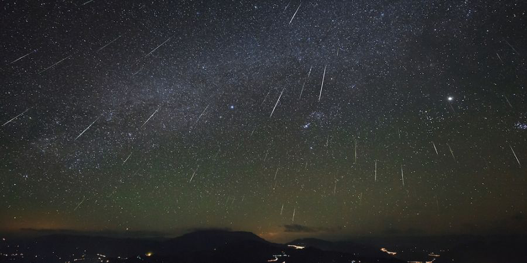

Orioniden
 Orioniden is een meteorenzwerm die in oktober verschijnt aan de hemel . De
radiant ligt in het sterrenbeeld Orion.
De Orioniden worden veroorzaakt door stofdeeltjes van de komeet Halley.
Tijdens het maximum heeft de zwerm een ZHR van 30.
Orioniden is een meteorenzwerm die in oktober verschijnt aan de hemel . De
radiant ligt in het sterrenbeeld Orion.
De Orioniden worden veroorzaakt door stofdeeltjes van de komeet Halley.
Tijdens het maximum heeft de zwerm een ZHR van 30.
Tauriden
Tauriden is een kleine zwerm die in de eerste helft van november te zien is. Hij
komt voor in het sterrenbeeld Stier.
Leoniden
De meteorenzwerm Leoniden is tussen halverwege november straalsgewijs
waar te nemen vanuit het sterrenbeeld Leeuw (Leo), waarnaar deze
meteoorstorm genoemd is.
De Leoniden komen van de komeet Tempel-Tuttle. Men meent dat rond de
genoemde data de aarde door een baan van vele deeltjes heen reist die door
deze komeet zijn uitgestoten als hij dicht bij de zon staat.
De Leoniden kunnen zeer veel spectaculaire vallende sterren vertonen. Er
schijnt een cyclus van 33 jaar te bestaan, die overeenkomt met de baan van
33 jaar die de komeet om de zon beschrijft. In piekjaren kunnen duizenden
meteoren per uur worden waargenomen. Topjaren waren 1698, 1799, 1833,
1866, 1966 en 2001.
Geminiden
De meteorenzwerm Geminiden verschijnt aan de hemel begin december. De
radiant ligt in het sterrenbeeld Tweelingen (Gemini).
De Geminiden worden veroorzaakt door stofdeeltjes afkomstig van de
planetoïde Phaethon, die beschouwd wordt als een uitgedoofde komeet. Het
maximum van de zwerm valt op 14 december, het is een erg actieve zwerm
met een ZHR van rond de 90. De meteoren kenmerken zich door hun
middelmatige snelheid (rond de 36 km/s), hun gelige kleur en relatief grote
helderheid. De Geminiden vormen een scherp gepiekte zwerm, en de meeste
meteoren zijn slechts circa 3 dagen rond het maximum te zien.

Ursiden
Ursiden zijn trage meteoren (33 km/s) en kunnen elk jaar in principe de hele
nacht waargenomen worden de week voor kerstmis. Heldere exemplaren zijn
vaak geel van kleur. De radiant van de Ursiden is voor de Benelux circumpolair
en staat gedurende de maximumnacht in de buurt van de heldere ster Beta
Ursae Minoris (Kochab) in het sterrebeeld de Kleine Beer.